 

México acumula 69 medallas olímpicas (13 de oro, 24 de plata y 32 más de bronce) en toda la historia de los Juegos Olímpicos.
La mejor participación ocurrió como local durante los Juegos Olímpicos de México 1968 al obtener 9 medallas (3 de oro, 3 de palta y 3 bronce). La mejor participación externa fue en Los Ángeles 1984 con 6 medallas (2 de oro, 3 de plata y 1 de bronce) y en Sídney 2000 con 6 medallas (1 de oro, 2 de plata y 3 de bronce).
El máximo medallista mexicano es Joaquín Capilla, con cuatro preseas en total (1 de oro, 1 de plata y 2 de bronce).
México fue sede en los Juegos Olímpicos de México 1968 y de esta manera fue el primer país latinoamericano y el primero de habla hispana en organizar una cita olímpica.
La primera participación de deportistas mexicanos se produjo en los Juegos Olímpicos de París 1900 con el equipo de polo denominado Norteamérica, integrado por Manuel Escandón Barrón, Pablo Escandón Barrón, Eustaquio Escandón Barrón y William Hyden Wright.
Pero hasta los Juegos Olímpicos de París 1924 México envió de manera formal una delegación olímpica representada por un Comité olímpico y desde entonces ha participado en 20 ediciones de manera consecutiva.
Las participaciones individuales más destacadas fueron: la de Humberto Mariles Cortés en Londres 1948 durante las pruebas de equitación; salto individual, salto por equipos y en la prueba de los Tres días, al conseguir la medalla de oro en la dos primeras y bronce en la última, siendo así el 'único deportista mexicano en ganar 2 medallas de oro y 3 medallas en unos mismos Juegos Olímpicos.
Otra participación mexicana que ha destacado en la historia de los Juegos Olímpicos es la del clavadista Joaquín Capilla en Londres 1948 (bronce en plataforma), Helsinki 1952 (plata en plataforma) y Melbourne 1956 (oro en plataforma y bronce en trampolín), para ser el único deportista mexicano en ganar medallas olímpicas en dos o más Juegos Olímpicos y el máximo ganador de medallas olímpicas con 4.
La tarde del 11 de agosto del 2012, en el mítico estadio de Wembley, la Selección Mexicana conseguía una medalla de Oro ante Brasil, el máximo logro de balompié mexicano, y al mismo tiempo, los 18 jugadores que dirigía el técnico Luis Fernando Tena aseguraban una beca vitalicia que le cuesta al país poco más de tres millones de pesos al año.
En la lista de campeones Olímpicos están futbolistas como Carlos Salcido, José de Jesús Corona, Javier Aquino, Giovani Dos Santos, Oribe Peralta, Javier Cortés, Héctor Herrera, Néstor Vidrio, Miguel Ponce, Jorge el Chatón Enríquez, entre otros. El único retirado es Salcido.